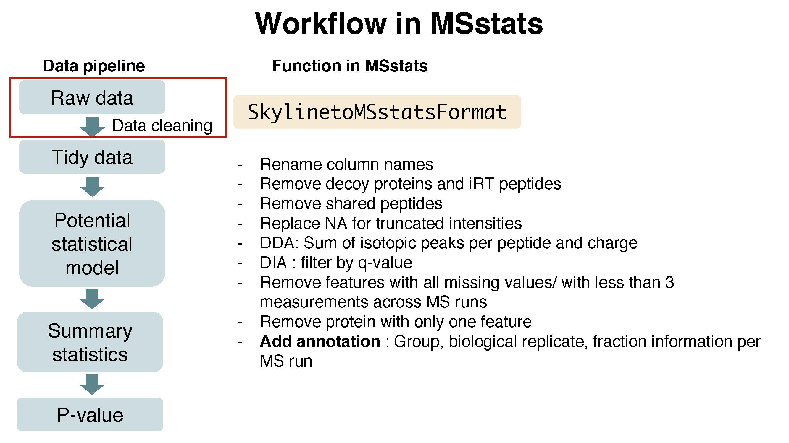
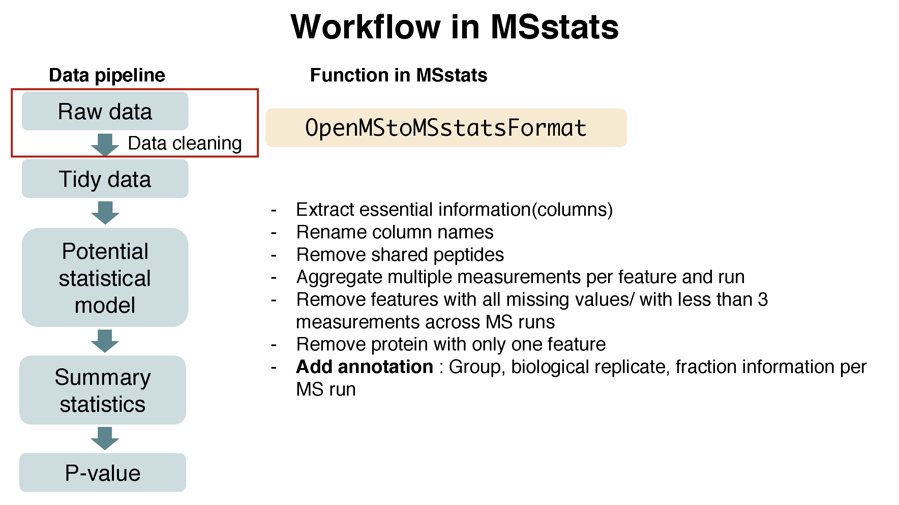

Chapter 1 Day 1 - Section 1 : MSstats, introduction to data and preprocessing
1.1 Objective
- Preprocessing steps to make required input format for MSstats from output from diverse output of spectral processing tools.
- Make annotation file, based on experimental design.
1.2 Workflow in MSstats


1.3 Data
- the quantified peak intensities data from ABRF 2015, processed by Skyline.

Summary of the ABRF 2015 study design, Choi, et al. J Proteome Res. 2017
1.4 Load MSstats
Load MSstats first. Then you are ready to start MSstats.
library(MSstats)
?MSstats## Registered S3 methods overwritten by 'ggplot2':
## method from
## [.quosures rlang
## c.quosures rlang
## print.quosures rlang1.5 Allowable data formats
MSstats performs statistical analysis steps, that follow peak identification and quantitation. Therefore, input
to MSstats is the output of other software tools (such as Skyline, MaxQuant and so on) that read raw spectral files
, identify and quantify spectral peaks. The preferred structure of data for use in MSstats is a .csv file
in a long format with at least 10 columns representing the following variables: ProteinName, PeptideSequence, PrecursorCharge, FragmentIon, ProductCharge, IsotopeLabelType, Condition, BioReplicate, Run, Intensity. The variable names are fixed, but are case-insensitive.
## ProteinName PeptideSequence PrecursorCharge FragmentIon ProductCharge
## 1 bovine S.PVDIDTK_5 5 NA NA
## 2 bovine S.PVDIDTK_5 5 NA NA
## 3 bovine S.PVDIDTK_5 5 NA NA
## 4 bovine S.PVDIDTK_5 5 NA NA
## 5 bovine S.PVDIDTK_5 5 NA NA
## 6 bovine S.PVDIDTK_5 5 NA NA
## IsotopeLabelType Condition BioReplicate Run Intensity
## 1 L C1 1 1 2636792
## 2 L C1 1 2 1992418
## 3 L C1 1 3 1982146
## 4 L C2 1 4 5019594
## 5 L C2 1 5 4560468
## 6 L C2 1 6 36278491.6 Convert to MSstats required format (Data cleaning)
Let’s start preprocessing steps to make required input format for MSstats from output from diverse output of spectral processing tools.

Data input support for various data acquisition methods : DDA, DIA, SRM
Interoperability with existing computational tools : - Converter functions for 7 data processin tools :
SkylinetoMSstatsFormat,MaxQtoMSstatsFormat,OpenMStoMSstatsFormat,ProgenesistoMSstatsFormat,PDtoMSstatsFormat,SpectronauttoMSstatsFormat,OpenSWATHtoMSstatsFormat,DIAUmpiretoMSstatsFormat- Consistent data cleaning steps across converter functions : filter multiple measurements, shared peptides, etc. - Generate the same format of data from diverse type of data format.
1.6.1 Skyline output
1.6.1.1 Read data
The required input data is generated automatically when using MSstats report format in Skyline.
We first load and access the dataset processed by Skyline. The name of saved file from Skyline using MSstats report format is ‘ABRF2015_Skyline_report.csv’. or you can use the published data from this link (https://panoramaweb.org/labkey/project/MacCoss/brendan/manuscripts/iPRG%202015/begin.view). This example dataset is the exactly same data in ‘iPRG_10ppm_2rt_15cut_nosingle.csv’ from the link above.
# Read output from skyline
raw.skyline <- read.csv(file="data/data_Skyline/ABRF2015_Skyline_report.csv")# Check the first 6 rows of dataset
head(raw.skyline)## ProteinName PeptideSequence PeptideModifiedSequence
## 1 DECOY_sp|P0CF18|YM085_YEAST KDMYGNPFQK KDM[+16]YGNPFQK
## 2 DECOY_sp|P0CF18|YM085_YEAST KDMYGNPFQK KDM[+16]YGNPFQK
## 3 DECOY_sp|P0CF18|YM085_YEAST KDMYGNPFQK KDM[+16]YGNPFQK
## 4 DECOY_sp|P0CF18|YM085_YEAST KDMYGNPFQK KDM[+16]YGNPFQK
## 5 DECOY_sp|P0CF18|YM085_YEAST KDMYGNPFQK KDM[+16]YGNPFQK
## 6 DECOY_sp|P0CF18|YM085_YEAST KDMYGNPFQK KDM[+16]YGNPFQK
## PrecursorCharge PrecursorMz FragmentIon ProductCharge ProductMz
## 1 3 415.1974 precursor 3 415.1974
## 2 3 415.1974 precursor 3 415.1974
## 3 3 415.1974 precursor 3 415.1974
## 4 3 415.1974 precursor 3 415.1974
## 5 3 415.1974 precursor 3 415.1974
## 6 3 415.1974 precursor 3 415.1974
## IsotopeLabelType Condition BioReplicate FileName
## 1 light NA NA JD_06232014_sample1_B.raw
## 2 light NA NA JD_06232014_sample1_C.raw
## 3 light NA NA JD_06232014_sample1-A.raw
## 4 light NA NA JD_06232014_sample2_A.raw
## 5 light NA NA JD_06232014_sample2_B.raw
## 6 light NA NA JD_06232014_sample2_C.raw
## Area StandardType Truncated annotation_QValue
## 1 147327 NA False NA
## 2 1373397 NA False NA
## 3 71765 NA False NA
## 4 66387 NA False NA
## 5 107736 NA False NA
## 6 380812 NA False NAThere are some column named differently than required input. The information for Condition and BioReplicate is missing. Let’s do preliminary check for this input.
# total number of unique protein name
length(unique(raw.skyline$Protein))## [1] 3097# several isotopic peaks for peptide charge
unique(raw.skyline$FragmentIon)## [1] precursor precursor [M+1] precursor [M+2]
## Levels: precursor precursor [M+1] precursor [M+2]# unique FileName, which is MS run.
unique(raw.skyline$FileName)## [1] JD_06232014_sample1_B.raw JD_06232014_sample1_C.raw
## [3] JD_06232014_sample1-A.raw JD_06232014_sample2_A.raw
## [5] JD_06232014_sample2_B.raw JD_06232014_sample2_C.raw
## [7] JD_06232014_sample3_A.raw JD_06232014_sample3_B.raw
## [9] JD_06232014_sample3_C.raw JD_06232014_sample4_B.raw
## [11] JD_06232014_sample4_C.raw JD_06232014_sample4-A.raw
## 12 Levels: JD_06232014_sample1_B.raw ... JD_06232014_sample4-A.raw# 'Truncated' column
unique(raw.skyline$Truncated)## [1] False True
## Levels: False True# count table for 'Truncated' column
xtabs(~Truncated, raw.skyline)## Truncated
## False True
## 237 1256666 829# count which 'Truncated' is 'True'
sum(raw.skyline$Truncated == 'True')## [1] 8291.6.1.2 Set annotation file
Annotation information is required to fill in Condition and BioReplicate for corresponding Run information. Users have to prepare as csv or txt file like ‘ABRF2015_Skyline_annotation.csv’, which includes Run, Condition, and BioReplicate information, and load it in R.
annot.skyline <- read.csv(file="data/data_Skyline/ABRF2015_Skyline_annotation.csv")
annot.skyline## Run Condition BioReplicate
## 1 JD_06232014_sample1-A.raw Condition1 1
## 2 JD_06232014_sample2_A.raw Condition2 2
## 3 JD_06232014_sample4_B.raw Condition4 4
## 4 JD_06232014_sample1_B.raw Condition1 1
## 5 JD_06232014_sample1_C.raw Condition1 1
## 6 JD_06232014_sample2_B.raw Condition2 2
## 7 JD_06232014_sample2_C.raw Condition2 2
## 8 JD_06232014_sample3_A.raw Condition3 3
## 9 JD_06232014_sample3_B.raw Condition3 3
## 10 JD_06232014_sample3_C.raw Condition3 3
## 11 JD_06232014_sample4-A.raw Condition4 4
## 12 JD_06232014_sample4_C.raw Condition4 41.6.1.2.1 Common mistake for annotation file : Incorrect Run information
Raw file name in the output of spectral processing tool is commonly long. We can make a typo in annotation file. If Raw file name and Run information are not matched,
Let’s check whether Run information is same as File.Name in output of Skyline.
setdiff(unique(raw.skyline$FileName), annot.skyline$Run)## character(0)setdiff(annot.skyline$Run, unique(raw.skyline$FileName))## character(0)There is no issue in this annotation.
Let’s try the example with unmatched information.
annot.wrong <- read.csv(file="data/data_Skyline/ABRF2015_Skyline_annotation_wrong_example.csv")
annot.wrong## Run Condition BioReplicate
## 1 JD_06232014_sample1_A.raw Condition1 1
## 2 JD_06232014_sample2_A.raw Condition2 2
## 3 JD_06232014_sample4_B.raw Condition4 4
## 4 JD_06232014_sample1_B.raw Condition1 1
## 5 JD_06232014_sample1_C.raw Condition1 1
## 6 JD_06232014_sample2_B.raw Condition2 2
## 7 JD_06232014_sample2_C.raw Condition2 2
## 8 JD_06232014_sample3_A.raw Condition3 3
## 9 JD_06232014_sample3_B.raw Condition3 3
## 10 JD_06232014_sample3_C.raw Condition3 3
## 11 JD_06232014_sample4-A.raw Condition4 4
## 12 JD_06232014_sample4_C.raw Condition4 4Note! small details : hyphen vs underline.
1.6.1.2.2 Common mistake for annotation file : Incorrect BioReplicate information
MSstats distinguish the design of experiment as group comparison, time course, paired design, with the combination of Condition, BioReplicate, and Run.
1.6.1.2.2.1 Group comparison

In a group comparison design, the conditions (e.g., disease states) are profiled across non-overlapping sets of biological replicates (i.e., subjects). In this example there are 2 conditions, Disease and Control (in general the number of conditions can vary). There are 3 subjects (i.e., biological replicates) per condition (in general an equal number of replicates per condition is not required). Overall, in this example there are 2 × 3 = 6 mass spectrometry runs.
The most important is that 1) subject IDs for disease group are completely different thatn subject IDs for control group 2) Run is not order of spectral acquisition, but just unique MS run ID.

In addition, if each subject has e technical replicate runs (in general technical replicates are not required, and their number per sample may vary). there are 2 × 3 × 3 = 18 mass spectrometry runs.
1.6.1.2.2.2 Time course
The important feature of a time course experimental design is that a same subject (i.e., biological replicate) is repetitively measured across multiple time points. In this example there are 3 time points, Time1, Time2, and Time3 (in general the number of times can vary). There are 3 subjects (i.e., biological replicates) measured across times (in general an equal number of times per replicate is not required). There are no technical replicates (in general the number of technical replicates per sample may vary). Overall, in this example there are 3 × 3 = 9 mass spectrometry runs.

1.6.1.2.2.3 Paired design
Another frequently used experimental design is a paired design, where measurements from multiple conditions (such as healthy biopsy and disease biopsy) are taken from a same subject. The statistical model for this experimental design is the same as in the time course experiment, however the values in the columns of the input data may have a different appearence. In this example there are 3 subjects (in general the number of patients can vary). There are three conditions per subject (in general the number of conditions per subject can exceed two). Overall, in this example there are \(2 \times 3 = 6\) mass spectrometry runs. BioReplicate should indicate each individual ID.

1.6.1.3 Preprocessing with SkylinetoMSstatsFormat
The input data for MSstats is required to contain variables of ProteinName, PeptideSequence, PrecursorCharge, FragmentIon, ProductCharge, IsotopeLabelType, Condition, BioReplicate, Run, Intensity. These variable names should be fixed. MSstats input from Skyline adapts the column scheme of the dataset so that it fits MSstats input format. However there are several extra column names and also some of them need to be changed. SkylinetoMSstatsFormat function helps pre-processing for making right format of MSstats input from Skyline output. For example, it renames some column name, and replace truncated peak intensities with NA. Another important step is to handle isotopic peaks before using dataProcess. The output from Skyline for DDA experiment has several measurements of peak area from the monoisotopic, M+1 and M+2 peaks. To get a robust measure of peptide intensity, we can sum over isotopic peaks per peptide or use the highest peak. Here we take a summation per peptide ion.
Here is the summary of pre-processing steps in SkylinetoMSstatsFormat function (in orange box below).

For further details, visit the help file using the following code.
?SkylinetoMSstatsFormat# reformating and pre-processing for Skyline output.
input.skyline <- SkylinetoMSstatsFormat(raw.skyline,
annotation=annot.skyline,
removeProtein_with1Feature = TRUE)## ** Proteins, which names include DECOY, are removed.## ** Peptides, that are used in more than one proteins, are removed.## Warning in SkylinetoMSstatsFormat(raw.skyline, annotation =
## annot.skyline, : NAs introduced by coercion## ** Truncated peaks are replaced with NA.## ** For DDA datasets, three isotopic peaks per feature and run are summed.## ** 4 features have all NAs or zero intensity values and are removed.## ** 13 features have 1 or 2 intensities across runs and are removed.## ** All proteins have at least two features.head(input.skyline)## ProteinName PeptideSequence PrecursorCharge
## 1 sp|D6VTK4|STE2_YEAST EGEVEPVDM[+16]YTPDTAADEEARK 3
## 2 sp|D6VTK4|STE2_YEAST EGEVEPVDM[+16]YTPDTAADEEARK 3
## 3 sp|D6VTK4|STE2_YEAST EGEVEPVDM[+16]YTPDTAADEEARK 3
## 4 sp|D6VTK4|STE2_YEAST EGEVEPVDM[+16]YTPDTAADEEARK 3
## 5 sp|D6VTK4|STE2_YEAST EGEVEPVDM[+16]YTPDTAADEEARK 3
## 6 sp|D6VTK4|STE2_YEAST EGEVEPVDM[+16]YTPDTAADEEARK 3
## FragmentIon ProductCharge IsotopeLabelType Condition BioReplicate
## 1 sum NA L Condition1 1
## 2 sum NA L Condition2 2
## 3 sum NA L Condition4 4
## 4 sum NA L Condition2 2
## 5 sum NA L Condition4 4
## 6 sum NA L Condition3 3
## Run Intensity StandardType
## 1 JD_06232014_sample1_C.raw 7863713 NA
## 2 JD_06232014_sample2_A.raw 977615 NA
## 3 JD_06232014_sample4_B.raw 4102785 NA
## 4 JD_06232014_sample2_C.raw 6547299 NA
## 5 JD_06232014_sample4_C.raw 3972464 NA
## 6 JD_06232014_sample3_B.raw 8896052 NA1.6.1.4 Preliminary check
length(unique(input.skyline$ProteinName)) ## [1] 3027sum(is.na(input.skyline$Intensity)) ## [1] 219sum(!is.na(input.skyline$Intensity) & input.skyline$Intensity==0)## [1] 24141.6.2 MaxQuant output
1.6.2.1 Read data
Three files should be prepared before MSstats. Two files, ‘proteinGroups.txt’ and ‘evidence.txt’ are outputs from MaxQuant.
# First, get protein ID information
proteinGroups <- read.table("data/data_MaxQuant/proteinGroups.txt", sep = "\t", header = TRUE)# Read in MaxQuant file: evidence.txt
evi <- read.table("data/data_MaxQuant/evidence.txt", sep="\t", header=TRUE)
colnames(evi)## [1] "Sequence"
## [2] "Length"
## [3] "Modifications"
## [4] "Modified.sequence"
## [5] "Oxidation..M..Probabilities"
## [6] "Oxidation..M..Score.Diffs"
## [7] "Acetyl..Protein.N.term."
## [8] "Oxidation..M."
## [9] "Missed.cleavages"
## [10] "Proteins"
## [11] "Leading.proteins"
## [12] "Leading.razor.protein"
## [13] "Gene.names"
## [14] "Protein.names"
## [15] "Type"
## [16] "Raw.file"
## [17] "MS.MS.m.z"
## [18] "Charge"
## [19] "m.z"
## [20] "Mass"
## [21] "Resolution"
## [22] "Uncalibrated...Calibrated.m.z..ppm."
## [23] "Uncalibrated...Calibrated.m.z..Da."
## [24] "Mass.Error..ppm."
## [25] "Mass.Error..Da."
## [26] "Uncalibrated.Mass.Error..ppm."
## [27] "Uncalibrated.Mass.Error..Da."
## [28] "Max.intensity.m.z.0"
## [29] "Retention.time"
## [30] "Retention.length"
## [31] "Calibrated.retention.time"
## [32] "Calibrated.retention.time.start"
## [33] "Calibrated.retention.time.finish"
## [34] "Retention.time.calibration"
## [35] "Match.time.difference"
## [36] "Match.m.z.difference"
## [37] "Match.q.value"
## [38] "Match.score"
## [39] "Number.of.data.points"
## [40] "Number.of.scans"
## [41] "Number.of.isotopic.peaks"
## [42] "PIF"
## [43] "Fraction.of.total.spectrum"
## [44] "Base.peak.fraction"
## [45] "PEP"
## [46] "MS.MS.Count"
## [47] "MS.MS.Scan.Number"
## [48] "Score"
## [49] "Delta.score"
## [50] "Combinatorics"
## [51] "Intensity"
## [52] "Reverse"
## [53] "Potential.contaminant"
## [54] "id"
## [55] "Protein.group.IDs"
## [56] "Peptide.ID"
## [57] "Mod..peptide.ID"
## [58] "MS.MS.IDs"
## [59] "Best.MS.MS"
## [60] "AIF.MS.MS.IDs"
## [61] "Oxidation..M..site.IDs"unique(evi$Raw.file)## [1] JD_06232014_sample1-A JD_06232014_sample2_A JD_06232014_sample4_B
## [4] JD_06232014_sample1_B JD_06232014_sample1_C JD_06232014_sample2_B
## [7] JD_06232014_sample2_C JD_06232014_sample3_A JD_06232014_sample3_B
## [10] JD_06232014_sample3_C JD_06232014_sample4-A JD_06232014_sample4_C
## 12 Levels: JD_06232014_sample1_B ... JD_06232014_sample4-AOne file is for annotation information, required to fill in Condition and BioReplicate for corresponding Run information. Users have to prepare as csv or txt file like ‘ABRF2015_MaxQuant_annotation.csv’, which includes Run, Condition, and BioReplicate information, and load it in R.
1.6.2.2 Set annotation file
Annotation information is required to fill in Condition and BioReplicate for corresponding Raw.file information. Users have to prepare as csv or txt file like ‘ABRF2015_MaxQuant_annotation.csv’, which includes Raw.file, Condition, and BioReplicate information, and load it in R. Raw.file column in the annotation file should be the same as unique Raw.file in evidence.txt file.
# Read in annotation including condition and biological replicates: annotation.csv
annot.maxquant <- read.csv("data/data_MaxQuant/ABRF2015_MaxQuant_annotation.csv", header = TRUE)
annot.maxquant## Raw.file Condition BioReplicate IsotopeLabelType
## 1 JD_06232014_sample1-A Condition1 1 L
## 2 JD_06232014_sample2_A Condition2 2 L
## 3 JD_06232014_sample4_B Condition4 4 L
## 4 JD_06232014_sample1_B Condition1 1 L
## 5 JD_06232014_sample1_C Condition1 1 L
## 6 JD_06232014_sample2_B Condition2 2 L
## 7 JD_06232014_sample2_C Condition2 2 L
## 8 JD_06232014_sample3_A Condition3 3 L
## 9 JD_06232014_sample3_B Condition3 3 L
## 10 JD_06232014_sample3_C Condition3 3 L
## 11 JD_06232014_sample4-A Condition4 4 L
## 12 JD_06232014_sample4_C Condition4 4 L1.6.2.3 Preprocessing with MaxQtoMSstatsFormat
MaxQtoMSstatsFormat function helps pre-processing for making right format of MSstats input from MaxQuant output. Basically, this function gets peptide ion intensity from ‘evidence.txt’ file. In addition, there are several steps to filter out or to modify the data in order to get required information.
Here is the summary of pre-processing steps in MaxQtoMSstatsFormat function (in orange box below).

?MaxQtoMSstatsFormat# reformating and pre-processing for MaxQuant output.
# no protein with 1 peptide
input.maxquant <- MaxQtoMSstatsFormat(evidence=evi,
annotation=annot.maxquant,
proteinGroups=proteinGroups,
removeProtein_with1Peptide=TRUE)## ** + Contaminant, + Reverse, + Only.identified.by.site, proteins are removed.## ** Peptide and charge, that have 1 or 2 measurements across runs, are removed.## ** 282 proteins, which have only peptide and charge in a protein, are removed among 3157 proteins.head(input.maxquant)## ProteinName PeptideSequence PrecursorCharge FragmentIon
## 1 D6VTK4 EGEVEPVDMYTPDTAADEEARK 3 NA
## 2 D6VTK4 FYPGTLSSFQTDSINNDAK 2 NA
## 3 D6VTK4 IGPFADASYK 2 NA
## 4 D6VTK4 NQFYQLPTPTSSK 2 NA
## 5 D6VTK4 TFVSETADDIEK 2 NA
## 6 D6VTK4 TNTITSDFTTSTDR 2 NA
## ProductCharge IsotopeLabelType Condition BioReplicate
## 1 NA L Condition1 1
## 2 NA L Condition1 1
## 3 NA L Condition1 1
## 4 NA L Condition1 1
## 5 NA L Condition1 1
## 6 NA L Condition1 1
## Run Intensity
## 1 JD_06232014_sample1_B 87141000
## 2 JD_06232014_sample1_B 46167000
## 3 JD_06232014_sample1_B 45425000
## 4 JD_06232014_sample1_B 47094000
## 5 JD_06232014_sample1_B NA
## 6 JD_06232014_sample1_B 627860001.6.2.4 Preliminary check
length(unique(input.maxquant$ProteinName)) ## [1] 2875sum(is.na(input.maxquant$Intensity)) ## [1] 40056sum(!is.na(input.maxquant$Intensity) & input.maxquant$Intensity==0)## [1] 0Challenge
- Let’s check unique information for
Run,BioReplicateandConditionininput.maxquant.
unique(input.maxquant[, c('Run', 'BioReplicate', 'Condition')])## Run BioReplicate Condition
## 1 JD_06232014_sample1_B 1 Condition1
## 30600 JD_06232014_sample1_C 1 Condition1
## 61199 JD_06232014_sample1-A 1 Condition1
## 91798 JD_06232014_sample2_A 2 Condition2
## 122397 JD_06232014_sample2_B 2 Condition2
## 152996 JD_06232014_sample2_C 2 Condition2
## 183595 JD_06232014_sample3_A 3 Condition3
## 214194 JD_06232014_sample3_B 3 Condition3
## 244793 JD_06232014_sample3_C 3 Condition3
## 275392 JD_06232014_sample4_B 4 Condition4
## 305991 JD_06232014_sample4_C 4 Condition4
## 336590 JD_06232014_sample4-A 4 Condition41.6.3 OpenMS output
1.6.3.1 Read data
# First, read output of OpenMS
raw.openMS <- read.csv("data/data_OpenMS/ABRF2015_OpenMS_raw.csv", stringsAsFactors=F) # the data file
head(raw.openMS)## ProteinName PeptideSequence PrecursorCharge FragmentIon
## 1 sp|P09938|RIR2_YEAST AAADALSDLEIK 2 NA
## 2 sp|P09938|RIR2_YEAST AAADALSDLEIK 2 NA
## 3 sp|P09938|RIR2_YEAST AAADALSDLEIK 2 NA
## 4 sp|P09938|RIR2_YEAST AAADALSDLEIK 2 NA
## 5 sp|P09938|RIR2_YEAST AAADALSDLEIK 2 NA
## 6 sp|P09938|RIR2_YEAST AAADALSDLEIK 2 NA
## ProductCharge IsotopeLabelType Condition BioReplicate Run Intensity
## 1 0 L 1 1 1 391797000
## 2 0 L 4 4 10 103656000
## 3 0 L 4 4 11 361107000
## 4 0 L 1 1 2 456756000
## 5 0 L 1 1 3 389268000
## 6 0 L 2 2 4 4334880001.6.3.2 Set annotation file
The output from OpenMS already includes Run, BioReplicate, Condition information. Let’s check it.
unique(raw.openMS[, c('Run', 'BioReplicate', 'Condition')])## Run BioReplicate Condition
## 1 1 1 1
## 2 10 4 4
## 3 11 4 4
## 4 2 1 1
## 5 3 1 1
## 6 4 2 2
## 7 5 2 2
## 8 6 2 2
## 9 7 3 3
## 10 8 3 3
## 11 9 3 3
## 14 12 4 41.6.3.3 Preprocessing with OpenMStoMSstatsFormat
There are several steps to filter out or to modify the data in order to get required information.
Here is the summary of pre-processing steps in OpenMStoMSstatsFormat function.

?OpenMStoMSstatsFormat# reformating and pre-processing for OpenMS output.
input.openms <- OpenMStoMSstatsFormat(raw.openMS,
removeProtein_with1Feature=TRUE)## ** 0 features have all NAs or zero intensity values and are removed.## ** All peptides are unique peptides in proteins.## ** 909 features have 1 or 2 intensities across runs and are removed.## ** 698 proteins, which have only one feature in a protein, are removed among 2538 proteins.## ** No multiple measurements in a feature and a run.## Warning in OpenMStoMSstatsFormat(raw.openMS, removeProtein_with1Feature =
## TRUE): NAs introduced by coercion## now 'input.openms' is ready for MSstats
head(input.openms)## ProteinName PeptideSequence PrecursorCharge FragmentIon
## 1 sp|D6VTK4|STE2_YEAST EGEVEPVDMYTPDTAADEEARK 3 NA
## 2 sp|D6VTK4|STE2_YEAST FYPGTLSSFQTDSINNDAK 2 NA
## 3 sp|D6VTK4|STE2_YEAST IGPFADASYK 2 NA
## 4 sp|D6VTK4|STE2_YEAST NQFYQLPTPTSSK 2 NA
## 5 sp|D6VTK4|STE2_YEAST TFVSETADDIEK 2 NA
## 6 sp|D6VTK4|STE2_YEAST TNTITSDFTTSTDR 2 NA
## ProductCharge IsotopeLabelType Condition BioReplicate Run Intensity
## 1 0 L 1 1 1 64757900
## 2 0 L 1 1 1 38852700
## 3 0 L 1 1 1 73225800
## 4 0 L 1 1 1 63139900
## 5 0 L 1 1 1 NA
## 6 0 L 1 1 1 589053001.6.3.4 Preliminary check for preprocessed data
length(unique(input.openms$ProteinName)) ## [1] 1840sum(is.na(input.openms$Intensity)) ## [1] 21962sum(!is.na(input.openms$Intensity) & input.openms$Intensity==0)## [1] 0table(input.openms$Run)##
## 1 2 3 4 5 6 7 8 9 10 11 12
## 15560 15560 15560 15560 15560 15560 15560 15560 15560 15560 15560 15560Challenge
- Let’s check unique information for
Run,BioReplicateandCondition.
unique(input.openms[, c('Run', 'BioReplicate', 'Condition')]) ## Run BioReplicate Condition
## 1 1 1 1
## 15561 10 4 4
## 31121 11 4 4
## 46681 12 4 4
## 62241 2 1 1
## 77801 3 1 1
## 93361 4 2 2
## 108921 5 2 2
## 124481 6 2 2
## 140041 7 3 3
## 155601 8 3 3
## 171161 9 3 31.6.4 Progenesis output
1.6.4.1 Read data
# First, read output of Progenesis
raw.progenesis <- read.csv("data/data_Progenesis/ABRF2015_Progenesis_raw.csv", stringsAsFactors=F) # the data file
head(raw.progenesis)## X X.1 X.2 X.3 X.4
## 1
## 2 # Retention time (min) Charge m/z Measured mass
## 3 16 52.5563333333333 2 501.781277638303 1001.54800234285
## 4 32 38.15255 2 474.251481407549 946.488409881339
## 5 11167 36.2224333333333 2 474.25154745893 946.488541984099
## 6 41 45.5598 2 371.731536419815 741.448519905869
## X.5 X.6 X.7 X.8 X.9
## 1
## 2 Mass error (u) Mass error (ppm) Score Sequence Modifications
## 3 -0.00255665715405939 -2.55269904358308 1 TANDVLTIR
## 4 -0.00219111866147159 -2.31499251990099 1 VTDGVMVAR
## 5 -0.0020590159006133 -2.17542139186367 1 VTDGVMVAR
## 6 -0.00120309413080122 -1.62262402086192 0.9996 AGLNIVR
## X.10
## 1
## 2 Accession
## 3 sp|P00549|KPYK1_YEAST
## 4 sp|P00549|KPYK1_YEAST
## 5 sp|P00549|KPYK1_YEAST
## 6 sp|P00549|KPYK1_YEAST
## X.11
## 1
## 2 Description
## 3 Pyruvate kinase 1 OS=Saccharomyces cerevisiae (strain ATCC 204508 \\ S288c) GN=CDC19 PE=1 SV=2
## 4 Pyruvate kinase 1 OS=Saccharomyces cerevisiae (strain ATCC 204508 \\ S288c) GN=CDC19 PE=1 SV=2
## 5 Pyruvate kinase 1 OS=Saccharomyces cerevisiae (strain ATCC 204508 \\ S288c) GN=CDC19 PE=1 SV=2
## 6 Pyruvate kinase 1 OS=Saccharomyces cerevisiae (strain ATCC 204508 \\ S288c) GN=CDC19 PE=1 SV=2
## X.12 X.13 X.14
## 1
## 2 Use in quantitation Max fold change Highest mean condition
## 3 False 1.23101575731737 A
## 4 False 1.35108253622201 B
## 5 False 1.25419527606242 B
## 6 False 1.04868912680216 A
## X.15 X.16 X.17
## 1
## 2 Lowest mean condition Anova Maximum CV
## 3 C 0.0522715538027003 12.0175133289667
## 4 A 0.0393818452091522 26.8776079679151
## 5 A 0.253277920596793 27.2310093101224
## 6 B 0.993981434364646 27.0631636013386
## Normalized.abundance X.18 X.19
## 1 A
## 2 JD_06232014_sample1-A JD_06232014_sample2_A JD_06232014_sample3_A
## 3 234646642.659118 246323351.490501 306102714.66799
## 4 179120293.733639 104309665.701784 136741892.392964
## 5 2233197.90782367 1134566.5998162 1574437.81004362
## 6 123797188.716029 122761256.64621 116107425.243685
## X.20 X.21 X.22
## 1 B
## 2 JD_06232014_sample4-A JD_06232014_sample1_B JD_06232014_sample2_B
## 3 257629531.217182 235779468.539422 236753257.546934
## 4 105011188.469111 182469696.644175 183285243.781685
## 5 1701362.72342001 2336796.51015815 1788630.29256942
## 6 63610598.879437 108255803.660911 108785457.069653
## X.23 X.24 X.25
## 1 C
## 2 JD_06232014_sample3_B JD_06232014_sample4_B JD_06232014_sample1_C
## 3 186699807.218591 242959514.796972 223435557.783206
## 4 162853464.030243 180957229.609825 186073547.948691
## 5 1932732.32106691 2274168.76697097 2182403.4051037
## 6 92469286.5619254 96974519.2450418 115737794.475905
## X.26 X.27 X.28
## 1
## 2 JD_06232014_sample2_C JD_06232014_sample3_C JD_06232014_sample4_C
## 3 220456628.684641 197285091.954229 207473304.500931
## 4 163946644.909844 150247529.397207 176820166.306319
## 5 2040841.8048229 1497501.50492545 2156318.09540588
## 6 100428622.768589 109442962.863466 83998024.0208531
## Raw.abundance X.29 X.30
## 1 A
## 2 JD_06232014_sample1-A JD_06232014_sample2_A JD_06232014_sample3_A
## 3 244531299.931508 221199440.186087 277078923.760572
## 4 186665863.932395 93670533.1411598 123776414.130536
## 5 2327272.96336292 1018845.73758267 1425154.0840074
## 6 129012233.635811 110240142.001841 105098448.610706
## X.31 X.32 X.33
## 1 B
## 2 JD_06232014_sample4-A JD_06232014_sample1_B JD_06232014_sample2_B
## 3 213112377.670857 265826760.55748 265610928.042007
## 4 86865756.2312952 205723291.596601 205625739.64841
## 5 1407375.36397932 2634593.46237989 2006645.04833363
## 6 52618990.9526949 122051719.672593 122045231.85501
## X.34 X.35 X.36
## 1 C
## 2 JD_06232014_sample3_B JD_06232014_sample4_B JD_06232014_sample1_C
## 3 219812880.452275 242959514.796972 210648874.118526
## 4 191737150.420336 180957229.609825 175425002.929311
## 5 2275521.67817463 2274168.76697097 2057509.66730008
## 6 108869636.960823 96974519.2450418 109114396.746851
## X.37 X.38 X.39
## 1
## 2 JD_06232014_sample2_C JD_06232014_sample3_C JD_06232014_sample4_C
## 3 207260386.701525 217212520.118758 194785326.277837
## 4 154133015.755399 165423774.187439 166006773.109084
## 5 1918679.71576989 1648761.5589421 2024448.99975338
## 6 94417098.3431607 120497608.498225 78861145.7987456
## Spectral.counts X.40 X.41
## 1 A
## 2 JD_06232014_sample1-A JD_06232014_sample2_A JD_06232014_sample3_A
## 3 2 1 1
## 4 1 1 1
## 5 1 0 1
## 6 2 2 2
## X.42 X.43 X.44
## 1 B
## 2 JD_06232014_sample4-A JD_06232014_sample1_B JD_06232014_sample2_B
## 3 3 2 3
## 4 1 1 1
## 5 1 0 0
## 6 2 2 2
## X.45 X.46 X.47
## 1 C
## 2 JD_06232014_sample3_B JD_06232014_sample4_B JD_06232014_sample1_C
## 3 2 2 2
## 4 1 1 1
## 5 0 1 1
## 6 2 2 2
## X.48 X.49 X.50
## 1
## 2 JD_06232014_sample2_C JD_06232014_sample3_C JD_06232014_sample4_C
## 3 3 1 2
## 4 1 1 1
## 5 0 1 0
## 6 2 2 2One file is for annotation information, required to fill in Condition and BioReplicate for corresponding Run information. Users have to prepare as csv or txt file like ‘ABRF2015_Progenesis_annotation.csv’, which includes Run, Condition, and BioReplicate information, and load it in R.
1.6.4.2 Set annotation file
Annotation information is required to fill in Condition and BioReplicate for corresponding Run information. Users have to prepare as csv or txt file like ‘ABRF2015_Progenesis_annotation.csv’, which includes Run, Condition, and BioReplicate information, and load it in R.
## Read in annotation including condition and biological replicates: ABRF2015_Progenesis_annotation.csv
annot.progenesis <- read.csv("data/data_Progenesis/ABRF2015_Progenesis_annotation.csv", header = TRUE)
annot.progenesis## Run Condition BioReplicate
## 1 JD_06232014_sample1-A Condition1 1
## 2 JD_06232014_sample2_A Condition2 2
## 3 JD_06232014_sample4_B Condition4 4
## 4 JD_06232014_sample1_B Condition1 1
## 5 JD_06232014_sample1_C Condition1 1
## 6 JD_06232014_sample2_B Condition2 2
## 7 JD_06232014_sample2_C Condition2 2
## 8 JD_06232014_sample3_A Condition3 3
## 9 JD_06232014_sample3_B Condition3 3
## 10 JD_06232014_sample3_C Condition3 3
## 11 JD_06232014_sample4-A Condition4 4
## 12 JD_06232014_sample4_C Condition4 4!! Run information should be the same as annotated in output of Progenesis.
1.6.4.3 Preprocessing with ProgenesistoMSstatsFormat
The output from Progenesis includes peptide ion-level quantification for each MS runs. ProgenesistoMSstatsFormat function helps pre-processing for making right format of MSstats input from Progenesis output. Basically, this function reformats wide format to long format. It provide Raw.abundance, Normalized.abundance and Spectral count columns. This converter uses Raw.abundance columns for Intensity values. In addition, there are several steps to filter out or to modify the data in order to get required information.
Here is the summary of pre-processing steps in ProgenesistoMSstatsFormat function (in orange box below).

?ProgenesistoMSstatsFormat# reformating and pre-processing for Progenesis output.
input.progenesis <- ProgenesistoMSstatsFormat(raw.progenesis,
annotation=annot.progenesis,
removeProtein_with1Peptide=TRUE)## ** Peptides, that are used in more than one proteins, are removed.## ** Multiple measurements in a feature and a run are summarized by summaryforMultipleRows.## ** 898 proteins, which have only one feature in a protein, are removed among 3913 proteins.## now 'input.progenesis' is ready for MSstats
head(input.progenesis)## ProteinName PeptideModifiedSequence PrecursorCharge
## 1 sp|A5Z2X5|YP010_YEAST LTGNPELSSLDEVLAK 2
## 2 sp|A5Z2X5|YP010_YEAST RPAQLLL[N-term] nTerm+42.0106 2
## 3 sp|D6VTK4|STE2_YEAST EGEVEPVDMYTPDTAADEEARK 3
## 4 sp|D6VTK4|STE2_YEAST FYPGTLSSFQTDSINNDAK 2
## 5 sp|D6VTK4|STE2_YEAST IGPFADASYK 2
## 6 sp|O13297|CET1_YEAST IAGNAVGSVVK 2
## FragmentIon ProductCharge IsotopeLabelType Condition BioReplicate
## 1 NA NA L Condition1 1
## 2 NA NA L Condition1 1
## 3 NA NA L Condition1 1
## 4 NA NA L Condition1 1
## 5 NA NA L Condition1 1
## 6 NA NA L Condition1 1
## Run Intensity
## 1 JD_06232014_sample1_B 2550357.3
## 2 JD_06232014_sample1_B 865491.8
## 3 JD_06232014_sample1_B 3767734.3
## 4 JD_06232014_sample1_B 2591735.2
## 5 JD_06232014_sample1_B 2301483.1
## 6 JD_06232014_sample1_B 415181.81.6.4.4 Preliminary check for preprocessed data
length(unique(input.progenesis$ProteinName)) ## [1] 3015sum(is.na(input.progenesis$Intensity)) ## [1] 0sum(!is.na(input.progenesis$Intensity) & input.progenesis$Intensity==0)## [1] 418table(input.progenesis$Run)##
## JD_06232014_sample1-A JD_06232014_sample2_A JD_06232014_sample3_A
## 9646 9646 9646
## JD_06232014_sample4-A JD_06232014_sample1_B JD_06232014_sample2_B
## 9646 9646 9646
## JD_06232014_sample3_B JD_06232014_sample4_B JD_06232014_sample1_C
## 9646 9646 9646
## JD_06232014_sample2_C JD_06232014_sample3_C JD_06232014_sample4_C
## 9646 9646 9646Challenge
- Let’s check unique information for
Run,BioReplicateandCondition.
unique(input.progenesis[, c('Run', 'BioReplicate', 'Condition')]) ## Run BioReplicate Condition
## 1 JD_06232014_sample1_B 1 Condition1
## 10547 JD_06232014_sample1_C 1 Condition1
## 21093 JD_06232014_sample1-A 1 Condition1
## 31639 JD_06232014_sample2_A 2 Condition2
## 42185 JD_06232014_sample2_B 2 Condition2
## 52731 JD_06232014_sample2_C 2 Condition2
## 63277 JD_06232014_sample3_A 3 Condition3
## 73823 JD_06232014_sample3_B 3 Condition3
## 84369 JD_06232014_sample3_C 3 Condition3
## 94915 JD_06232014_sample4_B 4 Condition4
## 105461 JD_06232014_sample4_C 4 Condition4
## 116007 JD_06232014_sample4-A 4 Condition41.7 Save your work
We can save the data that we made so far.
save(input.skyline, file='data/data_Skyline/input.skyline.rda')
save(input.maxquant, file='data/data_MaxQuant/input.maxquant.rda')
save(input.openms, file='data/data_OpenMS/input.openms.rda')
save(input.progenesis, file='data/data_Progenesis/input.progenesis.rda')